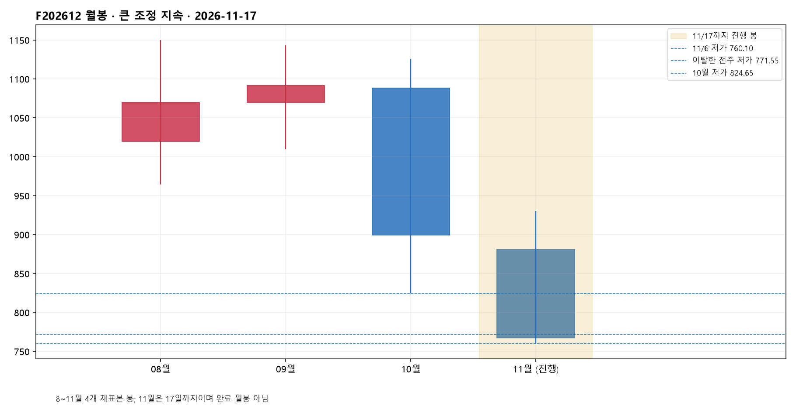
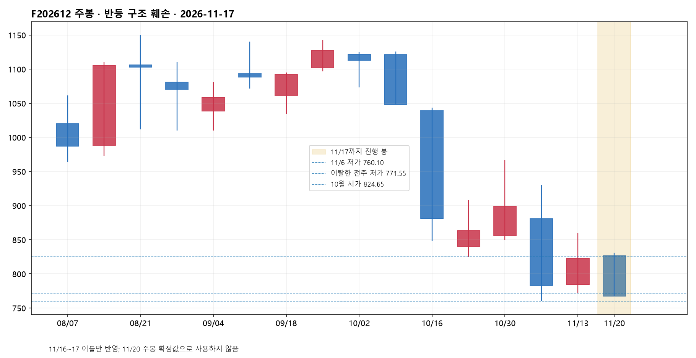
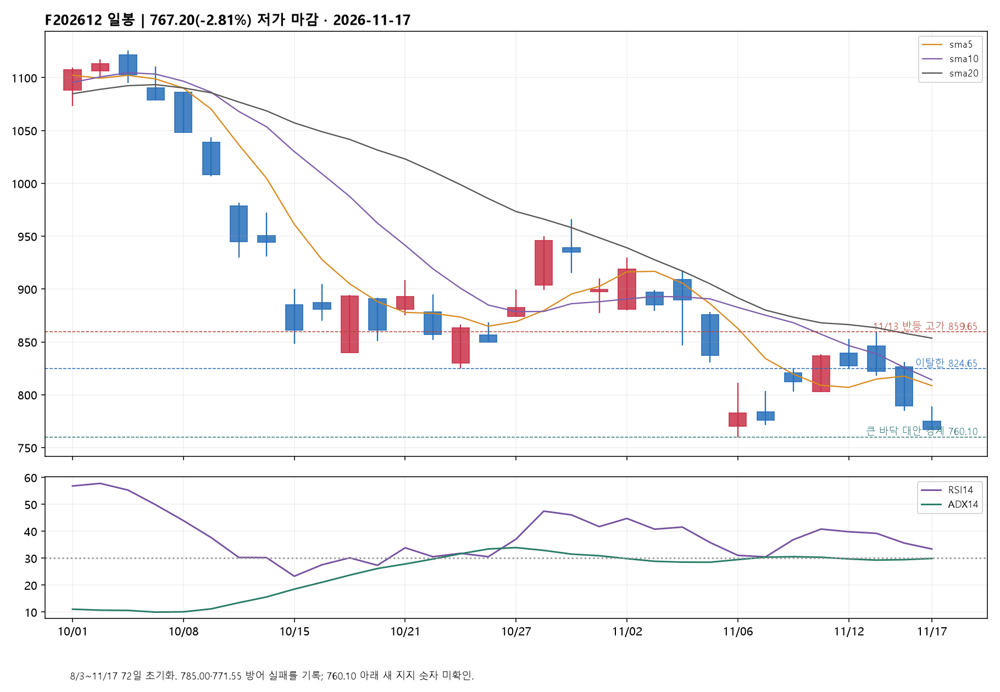
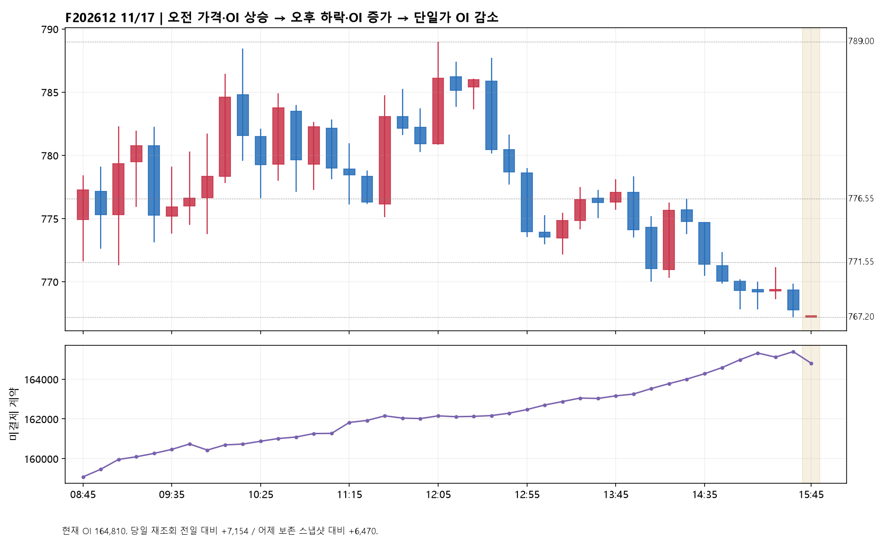
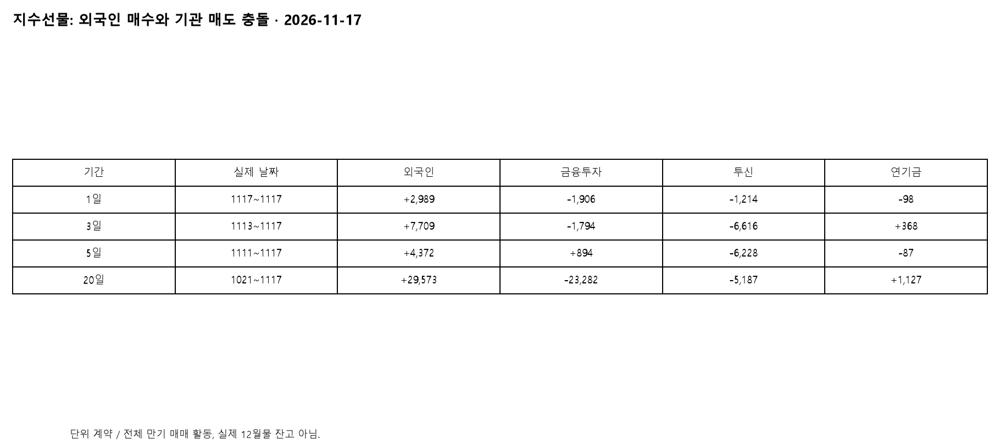
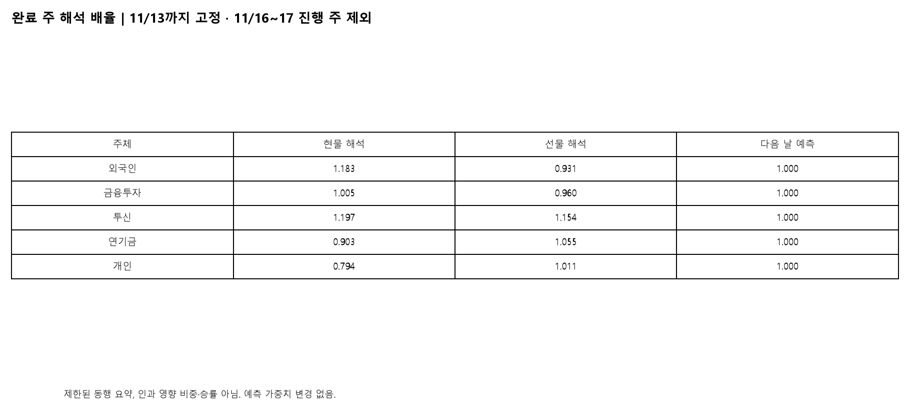
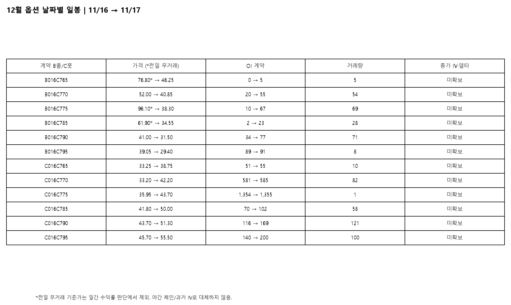

F202612 / A016C000 · 정규장 767.20 · OI 164,810 · 이후 야간 미반영
주봉: 지난 완료 주 반등이 이번 진행 주에 훼손 · 일봉·10분봉: 하방 우세. F202612는 767.20(-2.81%)으로 저가 마감했고 어제 경계 785.00·771.55를 모두 이탈했다. 외국인 선물 매수만으로 반등을 확정할 수 없다. 767.20은 강한 지지가 아닌 당일 저점이며, 다음 실측 경계는 11/6 저가 760.10이다. 771.30~771.60을 10분봉 종가로 회복하고 재지지한 뒤 774.90~776.55, 785.00~789.00을 차례로 회복해야 약세 판단을 낮춘다. 760.10 일봉 종가 이탈과 반등 재저항이면 큰 바닥 재시험 가설도 철회한다. 이후 야간 가격은 미반영이다.
어제 보고서의 785.00 방어와 그 아래 771.55 경계는 오늘 실패했다. 새 저점 767.20을 강한 지지로 바꾸어 그 실패를 덮지 않는다. 선호 시나리오는 11/6 760.10에서 11/13 859.65까지의 반등 이후 하락 재개·전저점 재시험이며, 세부 하위파가 완결되지 않아 확정 3파나 5파라고 부르지 않는다. 대안은 760.10 위에서 큰 바닥을 다시 만드는 조정이다. 대안이 살아 있으려면 우선 771.30~771.60 회복·재지지, 이어 776.55와 789.00 회복이 필요하다. 789.00 위 10분봉 안착은 당일 하락 구조 약화이고, 802.95 및 818.10~824.65 일봉 회복은 더 큰 구조 회복의 별도 단계다. 큰 상승 3파 가설은 현 가격 자료만으로 확인하지 못했다.
오늘 전체 만기 지수선물 순매매는 외국인 +2,989, 개인 +969, 기관계 -3,832계약이다. 기관 내부는 금융투자 -1,906·투신 -1,214·보험 -610·연기금 -98·은행 +13으로 매도가 넓어졌다. 어제 금융투자 +523·연기금 +336이 오늘 매도로 바뀐 점이 중요하다. 외국인은 최근 3일 +7,709, 5일 +4,372, 20일 +29,573계약을 샀지만 투신은 각각 -6,616, -6,228, -5,187계약을 팔았다. 외국인 매수가 매도를 받아낸 상대편 중 하나라는 것은 확인되지만, 가격은 저가로 밀려 매수의 가격 방어 효과는 확인되지 않았다. 누적 매수를 상승 확정으로 읽지 않는다.
외국인은 지수선물을 사면서 현물과 주식선물은 팔았다. LS 현물 금액 필드에서는 외국인 -14,216, 금융투자 +7,672, 투신 -1,690, 연기금 -84, 기관계 +5,131(상세 조회 +5,132)이다. 고정 원화 단위의 독립 검증이 끝나지 않아 이를 조원으로 변환하지 않는다. 금융투자가 현물 매도를 흡수했지만 투신·연기금까지 매수가 확산된 모습은 아니다. 주식선물 외국인 -19,667·기관 -61,386계약은 지수선물과 방향이 다르며 계약승수·종목이 달라 수량을 합산하지 않는다. 프로그램 순매매는 총 -707,931, 차익 +40,290, 비차익 -748,221(LS 원단위)로 비차익 매도가 우세했다. 선물 767.20과 KOSPI200 770.74의 마감 비교 베이시스는 -3.54로, 어제 -2.21보다 약하다. 15:45 선물과 15:30 현물의 비동시 비교이며 체결 가능한 차익이나 이론 베이시스가 아니다. 이론 베이시스와 주도주 제외 시장 수급은 현재 검증 자료가 없어 확정하지 않는다.
오전 08:45→12:05 표시봉에서는 가격 777.25→786.10, OI 159,081→162,154로 가격과 OI가 함께 올랐다. 그러나 고가 789.00 이후 12:05→15:25에는 가격 786.10→767.75(-18.35), OI 162,154→165,388(+3,234)로 바뀌었다. 이 오후 조합은 미청산 계약이 쌓이는 동안 매도 쪽 가격 압력이 우세했던 정황이다. 시장 전체 신규 숏과 신규 롱은 함께 생기므로 외국인 신규 숏이라고 특정할 수 없다. 마지막 15:25→15:45 단일가 구간에는 가격 -0.55, OI -578로, 앞선 구간과 달리 순청산이 동반됐다. 최종 외국인 +2,989만으로 이 시간대 각각의 주체별 신규·청산을 배정하지 않는다. 0786 막판 외국인 순매수 확대도 집계 갱신 시점과 실제 체결 시점이 같다고 단정하지 않는다.
11/17 정규장 OI 164,810은 키움과 LS가 일치한다. 오늘 재조회한 양사 11/16 OI는 157,656이므로 같은 시계열 증가는 +7,154계약이다. 어제 보존한 키움 최종 스냅샷은 158,340이어서 그 원본 대비는 +6,470이다. 전일 684계약 차이의 정정·집계 원인은 미확인이고 원본을 보존한다. 오늘 일봉 거래량은 키움 136,825, 키움 분봉 합계와 LS 일봉은 134,877로 1,948 차이가 남는다. 따라서 정확한 VWAP·거래량 프로파일은 제외했다. 2027년 3월물 종가 760.00·거래량 79·보고 OI 7,283은 별도 계약이다. 전일 대비 OI +978이 당일 거래량 79보다 커 집계 범위가 해결되지 않았으므로 차월 신규 포지션·롤오버 증거로 사용하지 않는다.
외국인 콜은 수량 -2,599계약인데 금액 +100억원, 풋은 수량 +4,914·금액 +506억원이다. 콜 수량과 금액 부호가 엇갈리므로 단순 콜 매도 또는 콜 매수 한마디로 전체를 설명하지 않는다. 비싼 콜 매수·싼 콜 매도나 스프레드 등 여러 구성이 가능하며 동일 계좌 거래인지 확인되지 않았다. 풋 수량·금액 증가와 풋 대표 IV 상승은 하방 위험 수요가 남았다는 해석을 지지한다. 그러나 외국인 신규 풋 매수로 확정하지 않는다. 날짜가 붙은 LS 일봉으로 12월물 765·770·775·785·790·795의 콜·풋 12계약을 보완했다. 790콜은 가격 41.00→31.50, OI 34→77(+43); 790풋은 43.70→51.30, OI 116→169(+53)이다. 기초자산 하락의 가격 효과와 변동성 수요를 분리해야 하므로 이 값만으로 누가 새 숏·롱을 열었는지는 알 수 없다. 전일 무거래 계약은 과거 마지막 체결가일 수 있어 일간 수익률 근거에서 제외한다. 현재 행사가별 종가 IV·델타·호가 이력은 확보하지 못했고 야간 현재 체인으로 대체하지 않았다. 키움 대표 IV는 65.12→68.84, 콜 53.41→53.48, 풋 78.00→85.15로 풋 쪽 확대가 두드러진다. 대표 IV 차이를 고정 델타 스큐나 개별 계약 IV 변화라고 부르지 않는다.
11월 월물 옵션은 11/12에 만기가 끝났으며 오늘은 그 이후 세 번째 정규 거래일이다. 12월 선물·월물 옵션은 공식 두 번째 목요일 규칙상 12/10 만기로 11월물과 구분한다. 위클리 월·목 만기도 별개이며 이번 12월 계약 자료로 위클리의 잔고·감마를 추정하지 않는다. 최근 5·20일 옵션 순매매는 여러 만기의 매매 활동 통계일 뿐 12월물 보유량이 아니다. 만기 후에도 선물 저가 마감·현물 외국인 매도·풋 변동성 상승이 이어져, 이전 하락을 만기 일회성 청산만으로 설명하기는 어렵다. 반대 설명은 현물 축소와 선물 매수를 결합한 헤지/상대가치 거래이며 계좌 연결 자료 없이는 목적을 단정할 수 없다.
완료 주 11/9~11/13과 그때까지 20일의 동행으로 해석 배율을 고정했다. 현물은 외국인 1.183·투신 1.197, 선물은 외국인 0.931·투신 1.154배다. 오늘은 현물 외국인·투신 매도와 선물 투신 매도에 설명상의 무게를 더 두되, 인과적 시장 영향 비중이나 다음 날 확률은 아니다. 진행 주 11/16~17은 배율 계산에서 제외했다. 10/12~11/17 관측에서 외국인·투신 현물 동반매수+상승 뒤 다음 날 상승은 3/7, 동반매도+하락 뒤 다음 날 하락은 6/12였다(오늘 사건은 다음 날 미도래로 대기). 같은 기간 단순 하락일 다음 날 하락 9/16보다 우월하지 않다. 선물은 각각 1/3, 0/2로 표본이 작다. 예측 배율은 모두 1.0을 유지하고 내일 하락 확률 수치를 만들지 않는다.
선물 가격·지표는 F202612 개별 계약 8/3~11/17의 거래량 있는 72일을 사용했다. 원천 709일 전체를 같은 유동성의 실제 누적 포지션 역사로 취급하지 않았다. 주봉·월봉은 같은 일봉 재표본화이며 11/20 주봉과 11월 월봉은 진행 중이다. 수급은 10/12~11/17의 27거래일로 주간 비교했고, 9/11~11/17 44거래일 LS 단일 원천 전체 만기 관찰 누적은 외국인 +31,941·기관 -31,549·투신 -10,375계약이다. 이는 만기별 잔고가 아니며 과거 장부와 다른 조회값을 조용히 이어 붙이지 않았다. 기관합계에 금융투자·투신·연기금을 다시 더하지 않는다.
보조 현물 종가는 KOSPI 4,968.48(-2.59%), KOSPI200 770.74다. KOSPI와 선물 OHLC는 10/12~11/17 27거래일·216개 셀을 키움/LS 사이에서 대조해 일치했다. 현물 외국인·투신 매도와 비차익 프로그램 매도는 선물 가격 약세를 확인하지만 외국인 선물 매수는 반대 신호로 남긴다. 현재 확보한 자료는 매도 흡수 실패이지, 내일도 반드시 하락한다는 증거는 아니다. 기존 국내·해외 다중 시간대 부록은 11/12 등 과거 날짜여서 오늘 방향 근거에서 제외했다. 시장 폭·주도주 제외 수급·해외 월주일분봉은 이번 분석의 미검증 범위다.

10월 저가 824.65 아래에서 11월 진행 봉 하방

완료 주 11/13 반등 후 이번 진행 주 저가가 전주 771.55 이탈

어제 보고서의 785.00 방어와 그 아래 771.55 경계는 오늘 실패했다. 새 저점 767.20을 강한 지지로 바꾸어 그 실패를 덮지 않는다. 선호 시나리오는 11/6 760.10에서 11/13 859.65까지의 반등 이후 하락 재개·전저점 재시험이며, 세부 하위파가 완결되지 않아 확정 3파나 5파라고 부르지 않는다. 대안은 760.10 위에서 큰 바닥을 다시 만드는 조정이다. 대안이 살아 있으려면 우선 771.30~771.60 회복·재지지, 이어 776.55와 789.00 회복이 필요하다. 789.00 위 10분봉 안착은 당일 하락 구조 약화이고, 802.95 및 818.10~824.65 일봉 회복은 더 큰 구조 회복의 별도 단계다. 큰 상승 3파 가설은 현 가격 자료만으로 확인하지 못했다.

오전 08:45→12:05 표시봉에서는 가격 777.25→786.10, OI 159,081→162,154로 가격과 OI가 함께 올랐다. 그러나 고가 789.00 이후 12:05→15:25에는 가격 786.10→767.75(-18.35), OI 162,154→165,388(+3,234)로 바뀌었다. 이 오후 조합은 미청산 계약이 쌓이는 동안 매도 쪽 가격 압력이 우세했던 정황이다. 시장 전체 신규 숏과 신규 롱은 함께 생기므로 외국인 신규 숏이라고 특정할 수 없다. 마지막 15:25→15:45 단일가 구간에는 가격 -0.55, OI -578로, 앞선 구간과 달리 순청산이 동반됐다. 최종 외국인 +2,989만으로 이 시간대 각각의 주체별 신규·청산을 배정하지 않는다. 0786 막판 외국인 순매수 확대도 집계 갱신 시점과 실제 체결 시점이 같다고 단정하지 않는다.

오늘 전체 만기 지수선물 순매매는 외국인 +2,989, 개인 +969, 기관계 -3,832계약이다. 기관 내부는 금융투자 -1,906·투신 -1,214·보험 -610·연기금 -98·은행 +13으로 매도가 넓어졌다. 어제 금융투자 +523·연기금 +336이 오늘 매도로 바뀐 점이 중요하다. 외국인은 최근 3일 +7,709, 5일 +4,372, 20일 +29,573계약을 샀지만 투신은 각각 -6,616, -6,228, -5,187계약을 팔았다. 외국인 매수가 매도를 받아낸 상대편 중 하나라는 것은 확인되지만, 가격은 저가로 밀려 매수의 가격 방어 효과는 확인되지 않았다. 누적 매수를 상승 확정으로 읽지 않는다.

완료 주 11/9~11/13과 그때까지 20일의 동행으로 해석 배율을 고정했다. 현물은 외국인 1.183·투신 1.197, 선물은 외국인 0.931·투신 1.154배다. 오늘은 현물 외국인·투신 매도와 선물 투신 매도에 설명상의 무게를 더 두되, 인과적 시장 영향 비중이나 다음 날 확률은 아니다. 진행 주 11/16~17은 배율 계산에서 제외했다. 10/12~11/17 관측에서 외국인·투신 현물 동반매수+상승 뒤 다음 날 상승은 3/7, 동반매도+하락 뒤 다음 날 하락은 6/12였다(오늘 사건은 다음 날 미도래로 대기). 같은 기간 단순 하락일 다음 날 하락 9/16보다 우월하지 않다. 선물은 각각 1/3, 0/2로 표본이 작다. 예측 배율은 모두 1.0을 유지하고 내일 하락 확률 수치를 만들지 않는다.

외국인 콜은 수량 -2,599계약인데 금액 +100억원, 풋은 수량 +4,914·금액 +506억원이다. 콜 수량과 금액 부호가 엇갈리므로 단순 콜 매도 또는 콜 매수 한마디로 전체를 설명하지 않는다. 비싼 콜 매수·싼 콜 매도나 스프레드 등 여러 구성이 가능하며 동일 계좌 거래인지 확인되지 않았다. 풋 수량·금액 증가와 풋 대표 IV 상승은 하방 위험 수요가 남았다는 해석을 지지한다. 그러나 외국인 신규 풋 매수로 확정하지 않는다. 날짜가 붙은 LS 일봉으로 12월물 765·770·775·785·790·795의 콜·풋 12계약을 보완했다. 790콜은 가격 41.00→31.50, OI 34→77(+43); 790풋은 43.70→51.30, OI 116→169(+53)이다. 기초자산 하락의 가격 효과와 변동성 수요를 분리해야 하므로 이 값만으로 누가 새 숏·롱을 열었는지는 알 수 없다. 전일 무거래 계약은 과거 마지막 체결가일 수 있어 일간 수익률 근거에서 제외한다. 현재 행사가별 종가 IV·델타·호가 이력은 확보하지 못했고 야간 현재 체인으로 대체하지 않았다. 키움 대표 IV는 65.12→68.84, 콜 53.41→53.48, 풋 78.00→85.15로 풋 쪽 확대가 두드러진다. 대표 IV 차이를 고정 델타 스큐나 개별 계약 IV 변화라고 부르지 않는다.
2026-11-17T19:48:31.746886+09:00 · 조건부 해설, 자동 주문·비중 변경 아님